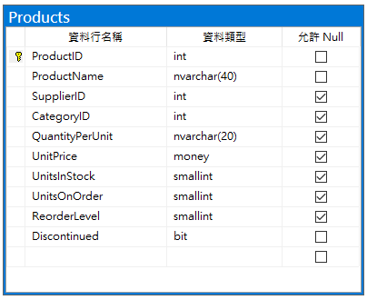
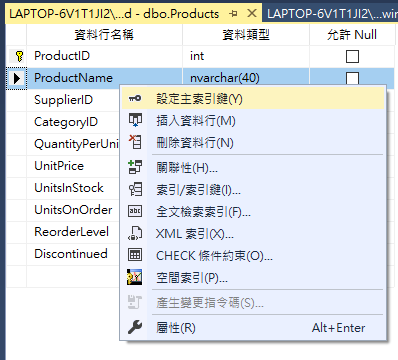
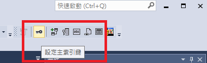
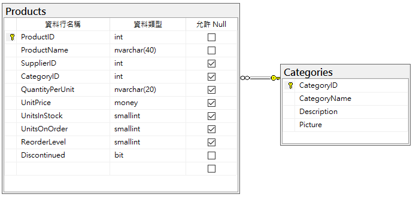
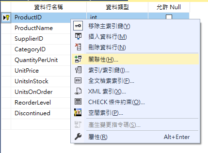
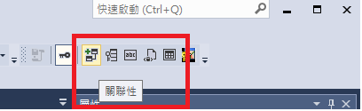
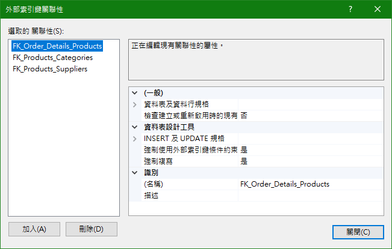
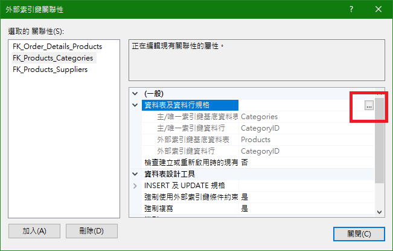
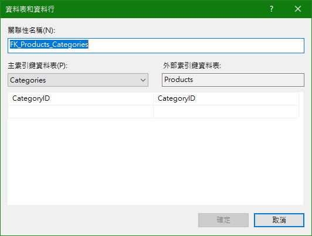

前言
索引可有效增進資料庫執行效率的工具，在 SQL Server 有多種索引，如主索引、外部索引、全文檢索索引、XML索引和空間索引等，這篇只會介紹主索引（Primary Key）及外部索引（Foreign Key）。
主索引（Primery Key）
Primary Key 可簡稱為 PK，Primary Key 是用來辨識紀錄的欄位，它具有唯一性且不允許重複，當主索引鍵用於查詢時，此索引可快速地存取資料。
什麼是唯一性且不允許重複？
唯一性與不允許重複可理解為一樣的意思，當它是唯一時就不會有重複，當它不允許重複時，就具有唯一性（廢話一段）。
馬上開啟北風資料庫的 Products 資料表來看，在 ProductID 設置主索引鍵，表示每筆產品資料都具有一個唯一的編號，所以具有唯一性且不重複，所以 User 可以透過 PK 來查找特定的產品。

什麼樣的資料行不適合做為 Primary Key？
Primary Key 不是第一個資料行就可以作為主索引鍵，也不是 Data Type 為 int 或數值或特定編碼格式就可以做為主索引鍵；前面談到主索引鍵必須有唯一性及重複性，舉例 Products 資料表內若使用 UnitPrice 為 PK 是不適合的，因為 UnitPirce 並不具有唯一性，不同的產品有可能為同等價位，再舉例使用 CategoryID 做為 PK 依然不適合，不同產品也可能在一樣分類下（CategoryID 已做正規化，可以先假想 CategoryID 換為 CategoryName 時的樣子比較有感覺）
注意 PK 的限制
- 一張資料表只能有一個主索引鍵條件約束
- 主索引鍵不可超過 16 個，總索引鍵長度不可超出 900 Bytes
- 主索引鍵需定義為非 Null
- 參與主索引鍵條件約束的所有資料行 Null 屬性會被設置為非 Null
如何建立索引？
在資料表設計工具對欲建立索引的資料行執行右鍵，選擇［設定主索引鍵］

或是執行工具列上索引鍵圖示

使用 T-SQL 建立索引
在新的資料表建立（Scripts 產自 Products）
1 | CREATE TABLE [dbo].[Products]( |
在現有資料表建立索引
1 | ALTER TABLE [dbo].[Products] |
外部索引（Foreign Key）
Foreign Key 可簡稱為 FK，關聯式資料庫內，資料表之間的連結是由 Foreign Key 來建立，在未建立 Foreign Key 時，資料表與資料表之間是沒有任何參考關係的。
接續 Northwind 的範例，有 Products 及 Categories 資料表，在這兩張資料表內，已經建立一個關聯；Products 及 Categories 內的 Primary Key 分別為 ProductID 和 CategoryID，為建立兩資料表之間的關聯，在 Products 需有一個欄位參考或者對應到 Categories 的 PK（CategoryID），所以看到 Products 內已經設置 CategoryID 的欄位，這個欄位便是 Foreign Key。

Primary Key 及 Foreign Key 名稱要相同嗎？
這個問題的答案為否，但在習慣上都會使用相同名稱，才能快速辨別資料表之間的關聯；但是 Primary Key 及 Foreign Key 在 DataType 等屬性必須相等。
Foreign Key 跟 Primary Key 一樣具有唯一性嗎？
Foreign Key 看似與 Primary Key 相同，但在定義是還是有不同之處，Foreign Key 雖是 Categories 的 PK，在 Categories 具有唯一性，但與 Products 建立關聯後，在 Products 內視為 FK ， Products 的 CategoryID 是參考 Categories 的 CategoryID，所以在參考上允許重複，如同上面所說，不同產品可能會是在同樣分類下，所以 FK 可以重複，但 PK 不行。
如何建立外部索引鍵？
在資料表設計工具對欲建立關聯性的資料行執行右鍵，選擇［關聯性］

或是執行工具列上索引鍵圖示

可以看到 Products 資料表內已經建立許多關聯，假設今天要新增一個關聯，執行左下的［加入］，即可馬上建立。

選擇 FK_Products_Categories 關聯性來看看如何設置；展開［資料表及資料行應用］，可以看到已經設置好的關聯，若今天是新建立的關聯，請選擇右邊［…］來設置

在資料表和資料行對話框中，可自行設置［關聯性名稱］，主索引鍵及外部索引鍵的資料表及資料行，在 Products 及 Categories 之間的關聯可參考已設置好的關係，也符合上述所說，Products 的 CategoryID 為 FK，Categories 的 CategoryID 為 PK。
